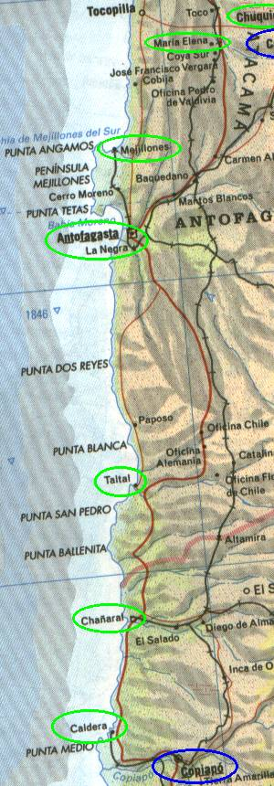

<< anterior || índice || próxima >>
Trecho Calama - Copiapó

- Calama
- Chuquicamata
- Maria Helena
- Antofagasta
- Mejillones
- Taltal
- Chañaral
- Caldera
- Copiapó
DICAS
- Não perca tempo em Chug Chug
- Antofagasta é palha
- Taltal é legal
- Pingüins no Pan de azúcar
CHUG CHUG E O ENGODO DOS GEOGLIFOS
Saindo de Calama, fomos até Chuquicamata e olhamos a mina de cobre apenas pelo lado de fora, pois as visitações só são permitidas de manhã bem cedo.
Aí logo após a saída de Chuquicamata vimos uma plaquinha bem pequena, apontando pra uma estradinha de chão onde dizia ir para o geoglifos de chug chug.
geoglifos são aqueles desenhos gigantes que os antigos faziam nas montanhas até hoje não se sabe pra quê. Bem, digamos que chug chug seja uma piada.
Os desenhos estão lá, mas todos concentrados em uma montanha, e apenas na face voltada para a estrada. A montanha tem pedras pequenas com areia por baixo, então qualquer um (tipo a gente), basta arrastar o pé no chão pra fazer um traço na montanha. Acreditamos que estes "geoglifos" foram feitos recentemente pra chamar turistas manés (tipo a gente).
De volta a estrada, cruzamos o trópico de capricórnio uns 40 km antes de chegar em antofagasta.
ANTOFAGASTA PALHA
Nossa primeira visão do oceano pacífico não foi muito agradável.
É um choque, após dias de deserto, ver o mar. Mas fomos justo escolher uma cidade portuária nojenta pra parar... antofagasta fede. É palha. É suja. íamos dormir lá mas desistimos ao ver o tipo da cidade.
Do outro lado, ela é um pouco melhor, mais ajeitada, mas ainda assim é palha.
Seguimos até mejillones pra dormir. Era no lado oposto de nosso destino, mas era a melhor opção. Cidadezinha pacata, com uma base militar "não fotografe ou será preso" no caminho.
CURIOSIDADES
Ah! Em mejillones tivemos a honra de provar os piores refrigerantes do mundo: PAP e BILS.
O refrigerante chamado quatro de sabor pomelo é igual a vitamina cebion.
Aqui também pudemos observar como os caras SEMPRE param o carro numa placa de pare, mesmo que seja no meio da estrada e dê pra ver de longe que não vem trem. Eles param mesmo, de ter que engattar a primeira e arrancar. Incrível.
Ah! Aproveitando a sessão curiosidades, os manés dos postos de gasolina SEMPRE deixam derramar combustível na lataria...
TAL TAL
Tal Tal é uma cidade normal, tem um porto pequeno, a comida é boa. Tem a praça central na frente da igreja. É legal para ali pra andar um pouco na praia...
PARQUE NACIONAL PAN DE AZÚCAR
Chegamos no pão de açucar (diz o carinha do lugar lá que é porquê o morrinho da ilha parece com o nosso pão de açucar - nada a ver) já de tarde, mas a tempo de fazer o passeio de barco até a ilha.
O parque é bem legal, é apenas uma ponta de praia, com algumas barracas onde moram os 15 habitantes do parque, pescadores. Na areia há espaço para colocar o carro e montar barraca (tem que pagar), inclusive tem churrasqueira individual também (que saudades de um churrasquinho...).
O passeio de barco é legalzinho, chega-se perto da ilha, pois não dá pra ir até ela sendo reserva nacional. De lá dá pra ver os pingüins humboldt e também leões-marinho e pelicanos.
Na volta, montamos nossa barraca na praia e de noite passamos horas a fio conversando com o rodrigo, que é um dos locais, quem pilotou o barco. Fale com ele: carvajalrodrigo@hotmail.com
PRAIAS
Seguindo em direção ao sul, têm muitas praias massa. Saímos um pouco da estrada principal para curtir um fora-de-estrada e andamos um bom trecho na areia. Foi divertido, mas não conseguimos atolar para ter que usar a maldita pá que comprei :)
Passamos pela tal bahia inglesa que tanto falam e vimos nada de mais.
Entramos num canyon legal na entrada da playa vieja.
COPIAPÓ E A SOLENÓIDE DO MOTOR DE ARRANQUE
Como nem tudo é só alegria, tivemos mais um estressezinho.
Trocando a bateria, resolvemos o problema do carro demorar pra pegar. Restou o problema no motor de arranque, que não sabíamos por quê, às vezes funcionava, às vezes não, totalmente aleatório.
Ao pararmos pra comer num restaurante em copiapó (que era muito caro e nem comemos), o diabo do motor de arranque encrencou de vez e não pegava de jeito algum...
E pra entrar como mais um item na lista de coincidências dessa viagem, quando estávamos lá olhando o motor, chegou o dono do carro do lado, que era mecânico. O cara deu uma olhada e falou que podia arrumar, mas tinha que ir até a casa dele pegar as ferramentas.
Ficamos na dúvida, se aceitava ou não, o cara ainda não tinha feito o preço, estávamos nem no meio da viagem e não podíamos gastar muito.
Ele insistiu e após mais uma pegada no tranco, fomos até a casa dele. Aí surgiu o estresse do estresse: o cara foi até não sei aonde buscar as ferramentas e levou o MarcioMan junto no carro, enquanto eu fiquei com a Toyota e um amigo do mecânico.
Pela primeira vez na viagem, nos separamos, e as chances de uma merda acontecer, numa cidade desconhecida num país desconhecido eram tão grandes que ficamos de cara como isso foi acontecer.
Eles demoraram, mas felizmente voltaram com as ditas ferramentas. O MarcioMan disse que foram até uma favela lá ou coisa parecida buscar as ferramentas do cara. Foi um alívio vê-lo voltando.
Bem, aí o cara, na maior começou a desmontar o motor, pra tirar o motor de arranque, ali, na calçada onde o carro estava estacionado, numa rua movimentada da cidade, peças pra todo lado no chão, uma beleza :)
Após abrir a parada ele concluiu que o problema era a solenóide, e tinha que comprar uma nova. Ele e o MarcioMan novamente saíram pra comprar a parada. É, novamente nos separamos e desta vez a Toyota já estava inoperante, com o motor desmontado... cagada.
Mas felizmente novamente eles voltaram. Já tinha juntado mais gente e estávamos lá, debruçados sobre o carro com mais 3 chilenos conversando. O mecânico se chamava carlos, seu amigo tinha cara de traficante, e o outro que chegou de bicicleta era todo megamass e tinha cara de romano, com aqueles narizes esquisitos. Mas eram todos gente boa.
O cara se bateu mas colocou a peça nova, apertou tudo no lugar, bateu a chave e... ...não pegou. Perguntei se ele não tinha colocado a parada invertida, aí ele falou: "pode ser".
Aí novamente desmontando tuuuuudo de novo, tira o motor de arranque, abre ele, tira a peça, se bate de novo pra colocá-la (desta vez do lado certo), fecha tudo, coloca de novo no carro, aperta os parafusos, bate a chave e... ...pegou!
Houve uma comemoração de todos nessa hora. O serviço não saiu tão caro quanto esperávamos, e contando mais o preço da peça, desembolsamos 76 dólares nessa brincadeira. Salgado, mas considerando que lá tudo é caro e o cara montou e desmontou parte do motor, não foi tão exorbitante.
Com essa brincadeira toda só fomos "almoçar" às 8 da noite...
O foda é que 2 dias depois o problema voltou e só quando voltamos pro *Brasil que fui saber que o problema era o pinhão que estava gasto. Hoje tenho uma solenóide reserva :)
<< anterior || índice || próxima >>